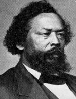

|

|

|
|
|
Born in Halifax County, North Carolina, Benjamin Sterling Turner was owned by a
widow who moved to Dallas County, Alabama, when he was a child. He learned to
read and write with the help of her children. At age twenty, he was sold to help
pay her debts. His new owner allowed Turner to hire his own time, and, still a
slave, he ran a hotel and livery stable and accumulated considerable wealth. He
later sought reimbursement from the Southern Claims Commission for the loss of
$8,000 worth of property. After the Civil War, Turner ran an omnibus line and
was a prosperous merchant and farmer. The 1870 census lists him as owning $2,150
in real estate and $10,000 in personal property, figures confirmed by credit
reports for Dun and Company. He put up his own money to establish a school for
black children in Selma immediately after the Civil War.
Turner was an agent in Selma for the black-owned Mobile Nationalist
and a delegate to the Republican state convention of 1867. After serving as
Dallas County tax collector in 1867 and on the Selma City Council in 1868,
Turner was elected to Congress for one term, serving 1871-73. Some black leaders
considered him lacking in respectability. J. Sella Martin complained in 1870
that Turner was "a barroom owner, livery stable keeper, and a man destitute of
education ... He had at one time the tax collectorship of the county in which he
lives and had to give it up because of incompetency ... He was nominated by a
class of men ... who hate respectability and who revel in noise, bluster and
pretension." In Congress, Turner introduced a bill authorizing the federal
government to sell land in small tracts to settlers. His constituents, he said,
"have struggled longer and labored harder ... than any people in the world.
Notwithstanding the fact that they have labored long, hard, and faithfully, they
live on little clothing, the poorest food, and in miserable huts ... While their
labor has rewarded the nation with larger revenue, they have consumed less of
the substance of the country than any other class of people." He attended the
1873 convention of the Alabama Labor Union.
Turner failed to be reelected to Congress in 1872 when freeborn editor Philip
Joseph ran against him, splitting the black vote and allowing a white candidate
to emerge victorious. After his term in Congress, he served on the Republican
state executive committee in 1874. During the depression of the 1870s, Turner's
Selma business failed and he turned to farming. When he died, he was living in
poverty.
Source: Eric Foner, Freedom's Lawmakers: A Directory of Black
Officeholders during Reconstruction (New York: Oxford University Press,
1993), 33.
|